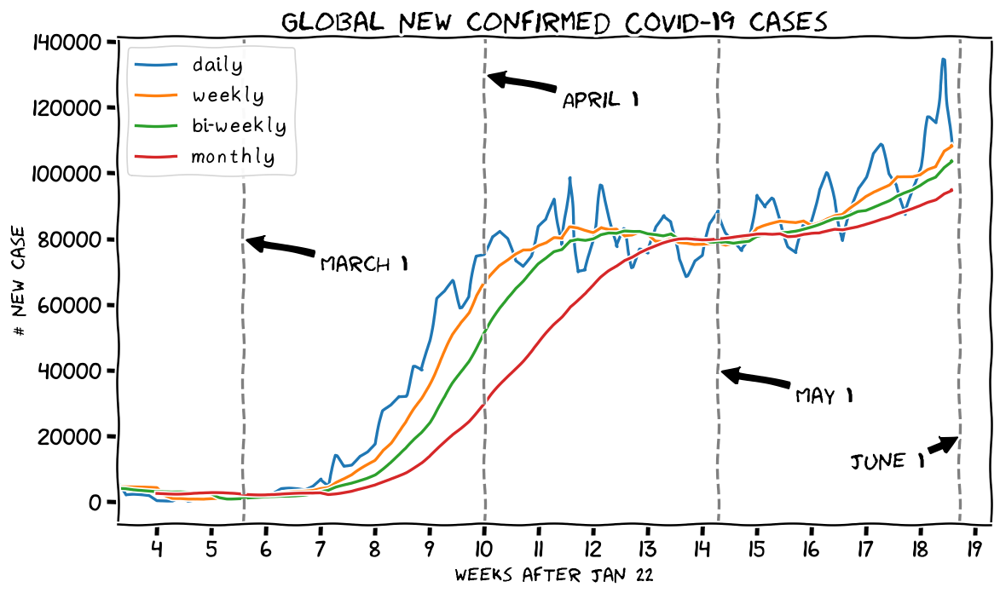

English version:The global daily new cases, and the simple moving average lines for 7 days (weekly), 14 days (bi-weekly), and 28 days (monthly). If we view the incidence globally, there is a stable number of new cases in the last two months, and the trend seems like going up again at the end of May--the weekly line is leading the monthly line to move up. It's about four months since the war between COVID-19 and mankind has started. One of the critical questions that we want to know is that "ARE WE SAFE NOW"? This article intended to give some information regarding that question, in two scales: globally and by country. Then, I tried to group the countries with similar trends in the last month, using an (unsupervised) clustering method.
Read here: Are we safe now? The incidence trends of COVID-19 in May 2020 , written on 2020-06-03
中文版：全球人類與COVID-19 （以下簡稱19肺炎）的戰爭開打至今已經過四個多月。如今全球趨勢似乎開始趨向平緩，各大城市、國家介已開始籌劃城市、國家的重啓計劃。然而我們真的安全了嗎？這個全球大流行的19肺炎危機真的快要解除了嗎？這是這篇短文核心想探討的問題。本文將從兩個尺度去討論這個問題，包括全球尺度與國家尺度。然後，我將試着將近一個月的趨勢相近的國家做（非監督式學習）的群聚分析。
繼續閱讀: 肺炎危機解除了嗎？分析2020年5月的新確診案例變化趨勢 , 寫於 on 2020-06-04